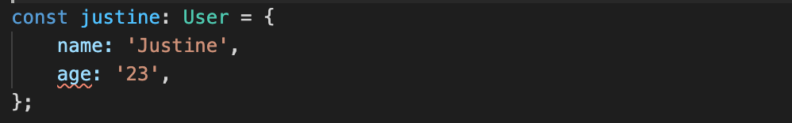

node.js 入门教程之十四 -- TypeScript
TypeScript 是微软开发的开源编程语言，在全世界的开发者中流行。
本质上来说 typescript 是 JavaScript 的超集，为其添加了很多功能。标志性的就是添加了 static type 静态类型定义，它可以声明期待的数据类型，例如：声明 function 中的期待的传入数据类型，期望的返回值的类型，object 的结构及 property 的数据类型等。
typescript 是一个强大的工具，给 JavaScript 项目开启了新的世界。它使我们的代码更加的安全有力，在程序发布前就可以防止很多的 bug 出现。在编写代码期间就能够及时反映出问题点，并且它已经被整合在现代的编译器中，如 VS code。
语法说明
下面是一个 typescript 代码示例：
type User = {
name: string;
age: number;
};
function isAdult(user: User): boolean {
return user.age >= 18;
}
const justine: User = {
name: 'Justine',
age: 23,
};
const isJustineAnAdult: boolean = isAdult(justine);- 首先我们通过 type 关键词定义一个自定义的 object 类型 User，其中定义了 User 的两个 properties 及其数据类型。
- 然后在定义的 function isAudlt 中接收一个参数，此参数类型为 User 类型，然后返回值类型为 boolean 类型。
- 然后我们定义了 justine object 且其类型为 User。在其中定义的两个 properties 也符合 User 中的类型。
- 最后定义了变量 isJustineAnAdult 且其数据类型为 boolean，将 isAudlt 的返回值赋给它。
如果我们在编程中没有使用指定的数据类型，typescript 将会给出警告提醒我们错误的地方，比如上面的示例中修改 justine 的 age 为一个字符串：

在 vs code 中会提示此处有错误。
另一方面也并不需要将所有地方的数据类型都做出声明，typescript 会自动推断出需要的类型。例如：即使我们不给 isJustineAnAdult 声明 boolean 类型，typescript 也会自动推断它是 boolean 类型的。
那么如何运行 typescript 代码呢？首先需要通过 npm 安装 typescript，它会安装我们需要的一些可执行程序：
npm install typescript
下面我们可以通过 tsc 命令将 typescript 代码转换为标准 JavaScript 代码。
我们将上面示例中的代码保存为 demo.ts 文件，然后通过 npx 调用 tsc 命令(如果以 global 方式安装 typescript 则可以直接运行命令)：
npx tsc demo.ts
以上命令会转换 JavaScript 代码并自动创建一个 demo.js 文件，此文件可以在 node.js 运行:
function isAdult(user) {
return user.age >= 18;
}
var justine = {
name: 'Justine',
age: 23
};
var isJustineAnAdult = isAdult(justine);如果 typescript 代码中包含错误，则使用上面的转换命令会出现报错信息：
% npx tsc demo.ts
demo.ts:12:5 - error TS2322: Type 'string' is not assignable to type 'number'.
12 age: '23',
~~
demo.ts:3:5
3 age: number;
~~
The expected type comes from property 'age' which is declared here on type 'User'
Found 1 error.可以看到 typescript 成功的防止将包含潜在错误代码的程序发布出去。
更多介绍
除此之外 typescript 也包含了很多其他很好的工具，如：interfaces, classes, utility types 等。更多使用方法参考 typescript 官方文档：https://www.typescriptlang.org/docs。
typescript 在 node.js 生态中已经有了很好的发展，且被用于很多开源项目和框架中。以下是一些使用 typescript 的开源项目：
- NestJS - robust and fully-featured framework that makes creating scalable and well-architected systems easy and pleasant
- TypeORM - great ORM influenced by other well-known tools from other languages like Hibernate, Doctrine or Entity Framework
- Prisma - next-generation ORM featuring a declarative data model, generated migrations and fully type-safe database queries
- RxJS - widely used library for reactive programming
总结
通过这 14 篇教程，我们介绍了 node.js 的基本语法和相关使用场景。后期可以在具体项目中进行更加详细的体验。
标签：无